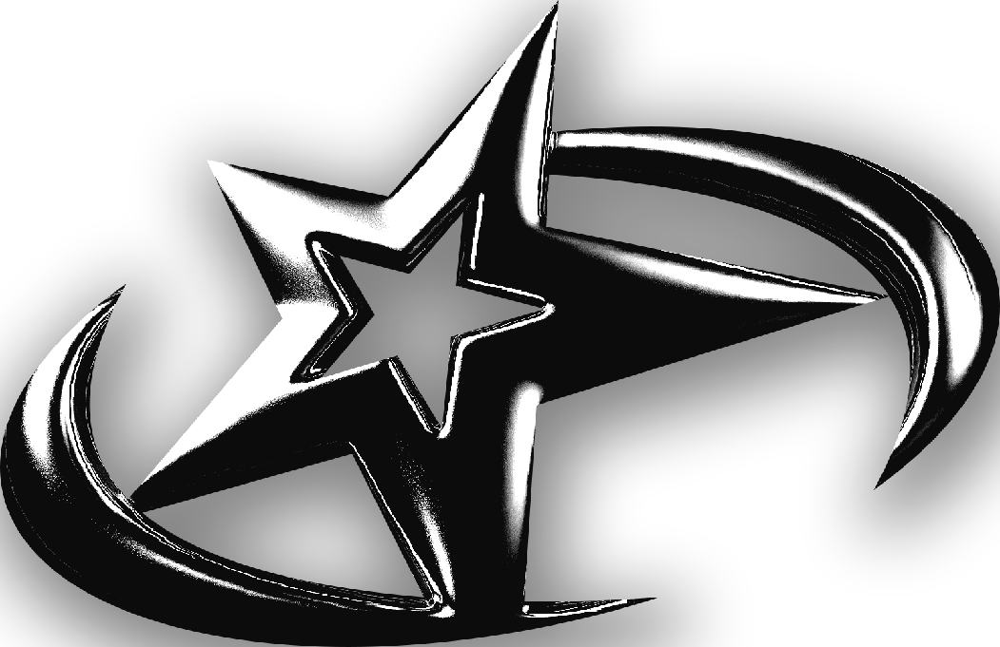

WESSTYLE
QUE M*** ES WESSTYLE?
Wesstyle es mucho más que un proyecto de diseño: es una identidad visual enfocada en el mundo de la música. No se trata solo de crear portadas atractivas, sino de interpretar visualmente la esencia de cada artista, su universo y el mensaje que quiere transmitir. Buscamos que cada portada conecte con el oyente, despierte una emoción y refleje fielmente el concepto detrás de la canción. En Wesstyle, priorizamos la estética.
Trabajos Realizados


Mi proceso creativo
Mi metódo de trabajo comienza con el artista, quien me comparte una parte de su tema (opcionalmente), la idea o emoción que quiere transmitir, y en algunos casos, una idea previa que ya tenga. También analizo trabajos anteriores del artista para entender su estilo.
A partir de toda esta información, empiezo a bocetar la idea final y la comparto con el artista para recibir su opinión. Si está conforme, paso a desarrollar la versión definitiva.
Una vez terminado el diseño, evalúo el tiempo invertido y establezco el precio del trabajo. Tras recibir el pago, envío el archivo final listo para su uso.
Sobre mí
Mi nombre es Valentín, tengo 17 años. En Wesstyle encontré la forma perfecta de fusionar mi amor por lo visual con mi pasión por la música, especialmente el trap, que es el género que más me inspira. Busco lograr que cada diseño se vea estético y cuidado, incluso cuando el tema o la idea, puedan parecer “feos” a primera vista. Dedico todo mi tiempo y energía a mejorar y crecer como diseñador. Quiero que quien vea mis trabajos no solo los mire, sino que se sorprenda y le vuele la cabeza. Para mí, cada portada es una oportunidad para transmitir emociones y contar historias con imágenes.
Contacto